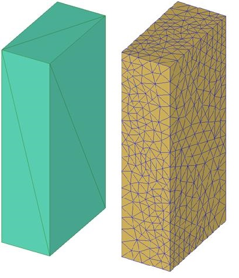
1.3. Setting material properties
1.6. Inter-Object Relationships
1.10. Post-Processing the Results
On a Windows machine, go to the  button select DEFORM-v1x.xxx (.xxx indicates version number E.g. v14.0.2)
and select DEFORM GUI Main vxx.xx from the menu. The DEFORM GUI Main window will appear as shown below Fig. 3DL1.1.
button select DEFORM-v1x.xxx (.xxx indicates version number E.g. v14.0.2)
and select DEFORM GUI Main vxx.xx from the menu. The DEFORM GUI Main window will appear as shown below Fig. 3DL1.1.
DEFORM GUI main window
Create a new problem either by selecting File  New Problem or by clicking the New Problem
New Problem or by clicking the New Problem  icon. The Problem Setup window will appear as shown in Fig. 3DL1.2. Select "Integrated Manufacturing Process"
radio button and unit system as "English" radio button in unit field. Define Problem Name as " Block " and make sure the “Show option dialog” check box is turned
on (if we do not turn on the “Show option dialog” check box, then we will not get the New Project dialog). Then click on
icon. The Problem Setup window will appear as shown in Fig. 3DL1.2. Select "Integrated Manufacturing Process"
radio button and unit system as "English" radio button in unit field. Define Problem Name as " Block " and make sure the “Show option dialog” check box is turned
on (if we do not turn on the “Show option dialog” check box, then we will not get the New Project dialog). Then click on  button to open a new problem using the
Deform Integrated Manufacturing Process.
button to open a new problem using the
Deform Integrated Manufacturing Process.
.
Problem type selection window
Multiple operation wizard will open with the New Project dialog (see Fig. 3DL1.3.), at this point user will be prompted to specify a project name (system will create a separate folder with this project name) and title for this session. In this session we use ‘Block’ as the project name.
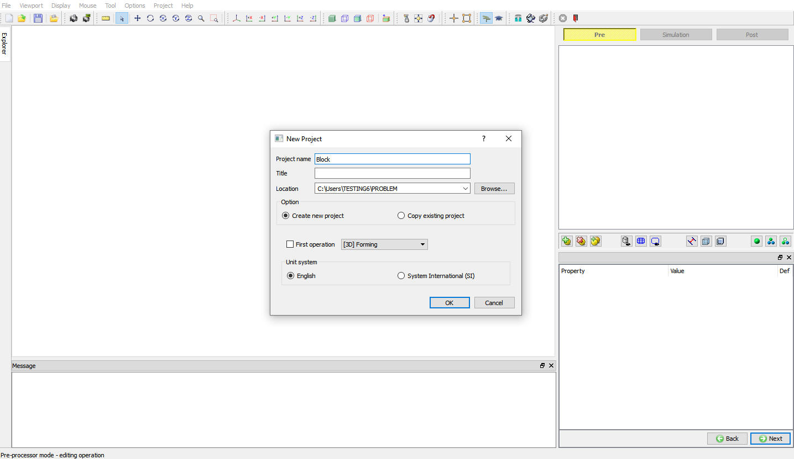
Problem type selection window
User can also change the Unit system (File menu selected unit system will be selected by default) and add 3D Forming operation by selecting from First operation pull down list and turn on checkbox (see Fig. 3DL1.4.). Using copy Existing project option we can import previous saved projects as new project. Click on  to continue to open the operation.
to continue to open the operation.
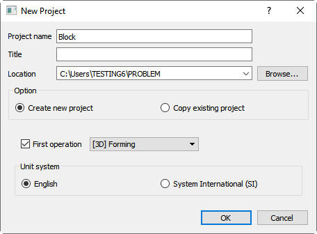
Assigning problem name
The Multiple operation wizard (MO wizard) will open (see Fig. 3DL1.5.). The MO wizard is divided into several distinct sections - namely the DISPLAY window, Graphical Utilities, Operation Tree, property Editor, Operation Editor, Explorer and Graphics window.
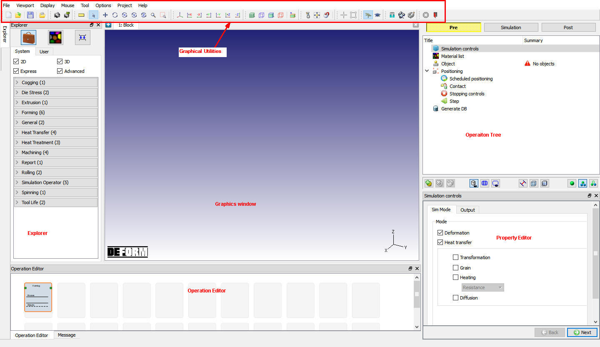
MO wizard window
In this operation we are setting up simple Isothermal operation so,in Simulation control page Sim Mode tab, turn off the Heat transfer mode check box (see Fig. 3DL1.6.).
Click on  .
.
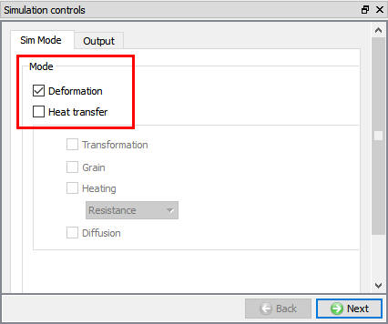
Simulation controls page
When setting up a simulation, material properties have to be specified for the objects. The workpiece has been assigned the material type Plastic, therefore the plastic flow stress needs to be defined. In addition, if the simulation were non-isothermal (temperature varying with time), then the thermal properties would also be required. The material properties of the dies do not have to be specified because their object type is Rigid (and the simulation is isothermal), and therefore do not undergo any deformation upon loading.
Click on the material  icon of the explorer tab, a list of materials which are divided into different categories will appear. For this simulation we need to define the AISI-1035, COLD material
for workpiece. so the Steel category has to be selected to bring up all the steel materials. Also, there are two different AISI-1035 materials – one for cold forming and one for hot forging. Since this simulation is set for room temperature,
select the ‘AISI-1035, COLD’ material.
icon of the explorer tab, a list of materials which are divided into different categories will appear. For this simulation we need to define the AISI-1035, COLD material
for workpiece. so the Steel category has to be selected to bring up all the steel materials. Also, there are two different AISI-1035 materials – one for cold forming and one for hot forging. Since this simulation is set for room temperature,
select the ‘AISI-1035, COLD’ material.
After selecting the material in the list, click on the  (Add) button to add the selected material to the problem.
(Add) button to add the selected material to the problem.
Click on  button to see the properties of the added material (see Fig. 3DL1.7. and
Fig. 3DL1.8.). Click on
button to see the properties of the added material (see Fig. 3DL1.7. and
Fig. 3DL1.8.). Click on  to go to object page.
to go to object page.
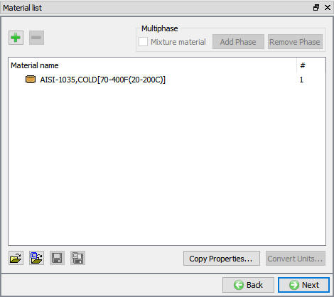
Material list page
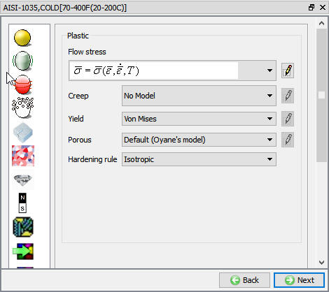
Material properties page
If there aren't already three objects, add the three objects by clicking the insert object button  , three objects will be named as Workpiece, Top die and bottom die. Workpiece
will get added with plastic object type where as Top die and Bottom die will added with rigid object type (see Fig. 3DL1.9.). Click on
, three objects will be named as Workpiece, Top die and bottom die. Workpiece
will get added with plastic object type where as Top die and Bottom die will added with rigid object type (see Fig. 3DL1.9.). Click on  button to go to Workpiece page.
button to go to Workpiece page.
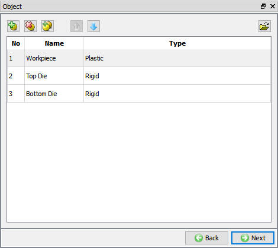
Objects adding page
As you enter the Workpiece page, change the Object name to Block and make sure that the object type is set to Plastic. Click on  to go to geometry page and click on
to go to geometry page and click on  load geometry from library option.(See Fig. 3DL1.10.)
load geometry from library option.(See Fig. 3DL1.10.)
The most common type of file for importing geometry into DEFORM-3D is the stereo lithography (.STL) file. The geometry for the Block is located in the file Block_Billet.STL in DEFORM installation folder \3D\LABS directory. Once you
have found and selected this file, click the  button to import the geometry into DEFORM. The geometry of a rectangular block should now be visible in the DISPLAY window.Now geometry
has been defined for the block, click on
button to import the geometry into DEFORM. The geometry of a rectangular block should now be visible in the DISPLAY window.Now geometry
has been defined for the block, click on  to go to mesh page.
to go to mesh page.
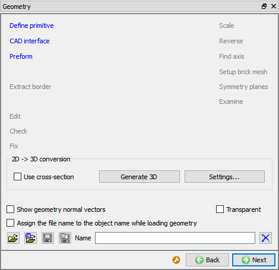
Geometry Definition page
In the guided mode mesh page we are seeing mesh setting options like target number of elements, preview and generate mesh, Click on the button
to see what the surface mesh looks like when using the default mesh settings. The surface mesh that is created looks good, so click the  button to finish the meshing process. When
you are asked "Do you want to assign default boundary conditions?" click
button to finish the meshing process. When
you are asked "Do you want to assign default boundary conditions?" click  . When the meshing is complete, We can see Number of elements in the Object Tree or in the Summary
section of the Meshing controls.(See Fig. 3DL1.11. and Fig. 3DL1.12.).
Click on
. When the meshing is complete, We can see Number of elements in the Object Tree or in the Summary
section of the Meshing controls.(See Fig. 3DL1.11. and Fig. 3DL1.12.).
Click on  to go to object material page.
to go to object material page.
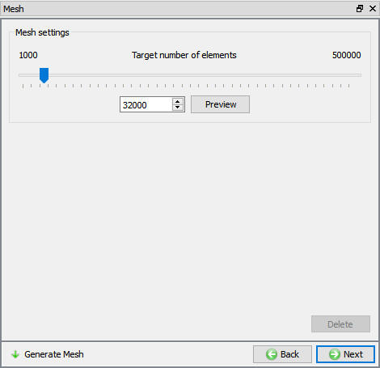
Mesh generation page
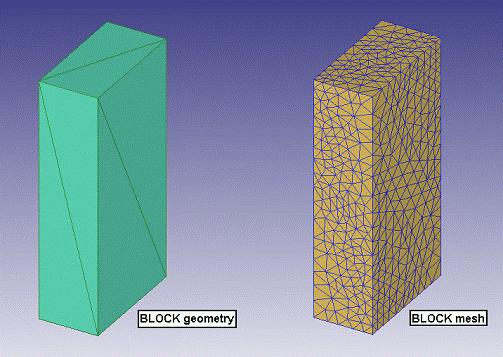
Before and After meshing
Again we can see the object material and we can edit material properties by clicking the  option. Select the material in the list to add the material to object as shown in
Fig. 3DL1.13. Click on
option. Select the material in the list to add the material to object as shown in
Fig. 3DL1.13. Click on  to go to Boundary conditions page.
to go to Boundary conditions page.
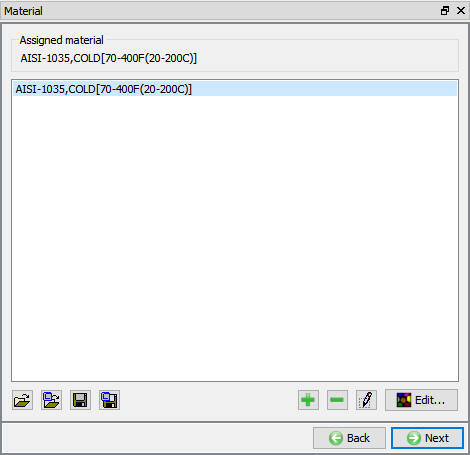
Object material page
For Object BCC, Default boundary conditions will get defined by MO wizard itself. Click on  to go to movement page.
to go to movement page.
For movement, since the workpiece has not have any initial movement, so we are not defining any movement for workpiece. Continue until Top die by clicking  button.
button.
As you enter the Top die page, make sure rigid object type is selected for top die. click  to go to Top die geometry page, click on load geometry from library option
to go to Top die geometry page, click on load geometry from library option  and import Block_TopDie.STL geometry from DEFORM installation folder \3D\LABS directory. The geometry of a rectangular block should now be visible in the Graphic
window. It is good practice to check the geometry of an object after it is imported into DEFORM to make sure it doesn’t have any problems. To check the geometry, click the
and import Block_TopDie.STL geometry from DEFORM installation folder \3D\LABS directory. The geometry of a rectangular block should now be visible in the Graphic
window. It is good practice to check the geometry of an object after it is imported into DEFORM to make sure it doesn’t have any problems. To check the geometry, click the  button.
A GEOMETRY CHECKING window will appear which gives a summary of the object’s geometry (see Fig. 3DL1.14.). For an object that has a
closed volume, there should be 1 surface, 0 free edges, and 0 invalid entities. Objects that are imported as surfaces and not solids will have a free edge but should still only have 1 surface.
button.
A GEOMETRY CHECKING window will appear which gives a summary of the object’s geometry (see Fig. 3DL1.14.). For an object that has a
closed volume, there should be 1 surface, 0 free edges, and 0 invalid entities. Objects that are imported as surfaces and not solids will have a free edge but should still only have 1 surface.
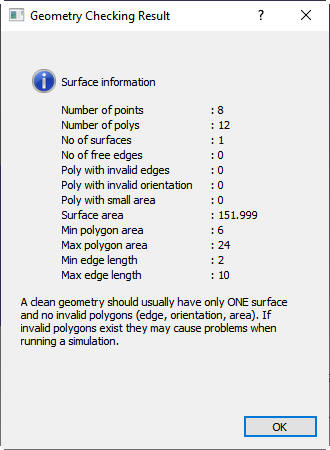
Geometry checking results window
In addition to checking whether the imported geometry has problems, the orientation of the geometry should also be checked. If the geometry is a closed volume, the correct orientation is defined when the surface normals are pointing out of the object.
When the geometry is not a closed volume but is just a surface, the correct orientation is defined when the normals are pointing toward the workpiece. Click the  button to view the surface normals, and if the surface normals are not correctly pointing out of the object, click the
button to view the surface normals, and if the surface normals are not correctly pointing out of the object, click the  button. continue up to Top die movement page by clicking
button. continue up to Top die movement page by clicking
 button.
button.
Top die Movement
If any of the dies are moving, that movement needs to be defined. In this simulation, the Top Die will be moving downward to compress the Block.
The die will be moving downward at a constant speed of 1 in/sec. In the Movement page go to the Translation tab select the movement Type as Speed. Set the Speed field to a Constant
value of 1 in/sec. The default Direction of –Z is correct for this simulation. Continue up to Bottom Die by clicking  button.
button.
As you enter the Bottom die page, make sure rigid object type is selected for bottom die. Click next to go to Bop die geometry page, click on click on load geometry from library option  and import Block_BottomDie.STL geometry file from DEFORM installation folder \3D\LABS directory. Use the
and import Block_BottomDie.STL geometry file from DEFORM installation folder \3D\LABS directory. Use the  and
and  buttons to check that the geometry doesn’t have any problems and that the surface normals are correctly pointing out of the object.
buttons to check that the geometry doesn’t have any problems and that the surface normals are correctly pointing out of the object.
At this point, all three objects should be visible in the DISPLAY window.
Continue up to positioning page by clicking  button.
button.
For a simple three objects setup with top die as primary die, if we click on the  button, the Bottom die will undergo interference positioning with workpiece in +Z direction
and Top die will undergo interference positioning with Workpiece in -Z direction. (See Fig. 3DL1.15.)
button, the Bottom die will undergo interference positioning with workpiece in +Z direction
and Top die will undergo interference positioning with Workpiece in -Z direction. (See Fig. 3DL1.15.)
Automatic Positioning
Open the Object positioning window by clicking the position objects button (see Fig. 3DL1.16.). The various positioning methods available within DEFORM-3D are:
|
Objects can be positioned by using the mouse to drag them around the DISPLAY window. |
|
|
Objects can be dropped in a defined direction, and they are allowed to translate and rotate until they come to rest (a state of equilibrium) against the other objects. Drop positioning is especially useful when the starting position of an object is somewhat ill-defined such as an irregularly shaped billet settling into a cavity. |
|
|
Objects can be moved a defined distance by either specifying a distance vector or by specifying the starting and ending points of the move. |
|
|
|
In Interference positioning, the object being positioned will be moved so that it very slightly overlaps a reference object. Objects can be rotated a defined angle about any axis. |
|
|
Objects can be rotated a defined angle about any axis. |
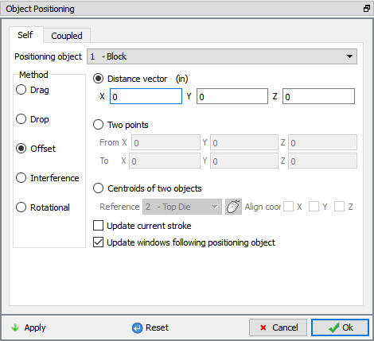
Object positioning window
Click the option and select the positioning object to be the Block. In the DISPLAY window, click on the +Z arrow and drag the Block upward so that it is no longer sitting on the Bottom Die. Change the Positioning object to the Top Die, and use the +Z arrow to move it upward so that it is no longer in contact with the Block, and then use the -Y arrow to place it in the position shown below.(See Fig. 3DL1.17.)
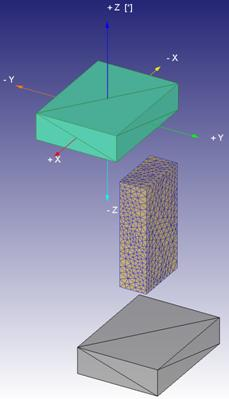
Drag positioning
As an example of Drop positioning, let's drop the Block onto the Bottom Die.
Click the button and change the positioning object to the Block. Change the Direction to -Z and click  to perform
the drop. (See Fig. 3DL1.18.)
to perform
the drop. (See Fig. 3DL1.18.)
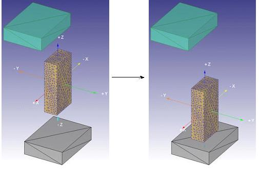
Drop positioning
As an example of Offset positioning, let's move the Top Die so that it is sitting directly on top of the Bottom Die.
Click the button and change the positioning object to the Top Die. The two methods of Offset positioning are 1) specifying a distance vector or 2) specifying the starting and ending points of the move. Either of these options can use the mouse to define the distance parameters.
The easiest way to position the Top Die on top of the Bottom Die is to use the Two points option. Select this option and select the points shown below as the Start and End points of the move. Click the  button to perform the move. (See Fig. 3DL1.19.)
button to perform the move. (See Fig. 3DL1.19.)
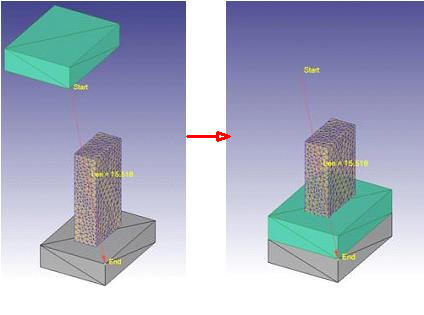
Offset positioning
The Top Die should now be sitting directly on top of the Bottom Die. Let's use Interference positioning to move the Top Die back to its correct position on top of the Block.
Click the  button. In the positioning dialogue, the Positioning object should already be the Top Die. Change the Reference to be the Block if it isn't
already. Since the Top Die has to move downward to contact the top of the Block, change the Approach Direction to -Z. Click the
button. In the positioning dialogue, the Positioning object should already be the Top Die. Change the Reference to be the Block if it isn't
already. Since the Top Die has to move downward to contact the top of the Block, change the Approach Direction to -Z. Click the  button to position the Top Die.
(See Fig. 3DL1.20. and Fig. 3DL1.21.)
button to position the Top Die.
(See Fig. 3DL1.20. and Fig. 3DL1.21.)
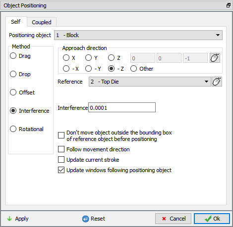
Object positioning window
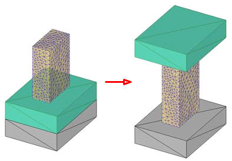
Object interference
When finished with this positioning, click  to exit the OBJECT POSITIONING window.
to exit the OBJECT POSITIONING window.
Continue up to contact page by clicking on  button.
button.
Note:
At any time when in the Object Positioning window, the button or the  button can be used to return the objects to their positions prior to entering the Object Positioning window.
button can be used to return the objects to their positions prior to entering the Object Positioning window.
In contact page, click on the  button, two relationships will get added, Relationships within DEFORM are defined in relation to Master and Slave objects. In this simulation,
a deforming workpiece is being deformed between two rigid dies. The rigid dies are defined as the Master objects and the deforming workpiece is defined as the Slave object.
button, two relationships will get added, Relationships within DEFORM are defined in relation to Master and Slave objects. In this simulation,
a deforming workpiece is being deformed between two rigid dies. The rigid dies are defined as the Master objects and the deforming workpiece is defined as the Slave object.
Several interface properties (mainly friction and heat transfer coefficient) can be defined for each of these relationships. Since this simulation will not be taking into account any heat transfer, the only interface property that needs to be defined is friction. (See Fig. 3DL1.22.)
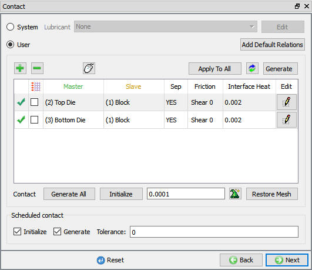
Contact window
With the first relationship highlighted, click the  button to modify the relationship. In the friction section of the screen, there is a pull-down menu that allows the user to choose
the appropriate friction conditions of common forming processes. Since this simulation takes place at room temperature, and the dies are steel, use the pull-down menu and select Cold forming (steel dies) from the list (See Fig. 3DL1.23.).
A friction value of 0.12 will automatically be selected. Click the
button to modify the relationship. In the friction section of the screen, there is a pull-down menu that allows the user to choose
the appropriate friction conditions of common forming processes. Since this simulation takes place at room temperature, and the dies are steel, use the pull-down menu and select Cold forming (steel dies) from the list (See Fig. 3DL1.23.).
A friction value of 0.12 will automatically be selected. Click the  button to return to the main contact page.
button to return to the main contact page.
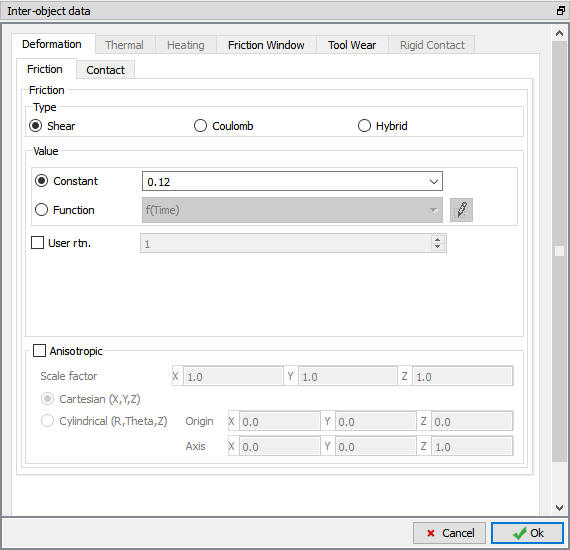
Inter object data definition window
Now that the Top Die - Block relationship has been defined, the relationship between the Bottom Die and the Block needs to be defined. Since the friction conditions are the same between the workpiece and both of the dies, the  button can be used to copy the interface properties from the first relationship to all of the others. After this is done, both relationships will have a friction of 0.12 defined. (See Fig. 3DL1.24.)
button can be used to copy the interface properties from the first relationship to all of the others. After this is done, both relationships will have a friction of 0.12 defined. (See Fig. 3DL1.24.)
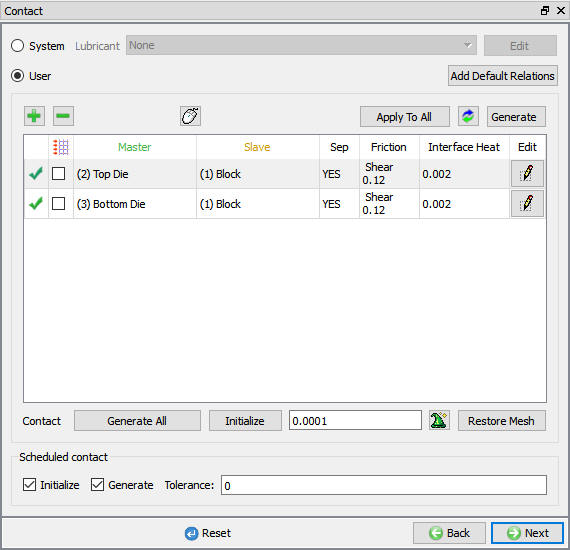
Contact Window
Once the relationships are defined, contact between the objects needs to be generated. When contact is generated, any nodes on the deforming object (Slave) that fall within a specified tolerance of a die (Master) are repositioned onto the die surface.
Before generating contact, we need to determine a reasonable tolerance value. Too large a tolerance will put too many nodes in contact with the die surface, which may cause distortion of the workpiece mesh. Too small a tolerance will mean that too few
nodes are found in the contact band and very little contact will be generated. By clicking on the  icon in the Tolerance section, DEFORM will determine a reasonable tolerance value.
A tolerance of 0.0046" gets calculated and automatically gets input into the program.
icon in the Tolerance section, DEFORM will determine a reasonable tolerance value.
A tolerance of 0.0046" gets calculated and automatically gets input into the program.
Once this tolerance has been set, click the  button to generate the contact between the objects. Contact will get generated between the Block and both dies, and this contact
is shown in the DISPLAY window as colored dots on the top and bottom surface of the Block.
button to generate the contact between the objects. Contact will get generated between the Block and both dies, and this contact
is shown in the DISPLAY window as colored dots on the top and bottom surface of the Block.
Note:
If too large a tolerance is used when generating contact, and the mesh of the workpiece gets distorted, the  button can be used to undo the contact generation.
button can be used to undo the contact generation.
Continue to the Step page by clicking  button.
button.
In Step page, set the Number of Simulation Steps to 20. Unless the simulation stops prematurely, the simulation will run 20 steps. Set the Step Increment to Save to 2. Every second step of the simulation will be written to the database. Notice that the Primary Die is shown in this window as well. set the primary die to the Top Die, and it is this die that will be used as a control for many of the stepping and stopping controls.(see Fig. 3DL1.25.)
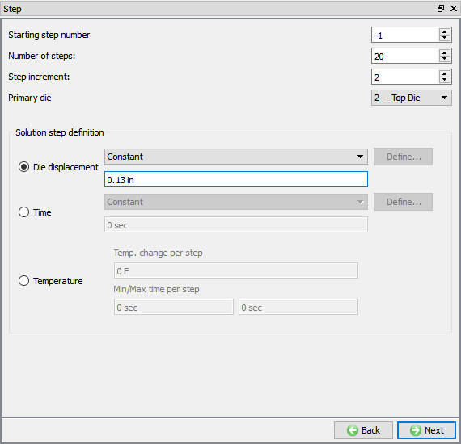
Step control page
An appropriate step size for the simulation now has to be determined. For most simulations, the amount of die stroke per step should be set to about 1/3 of a typical element edge length. The Measure  tool can be used to determine this value. Click the icon and then measure any edge length on the Block (you may have to click the
tool can be used to determine this value. Click the icon and then measure any edge length on the Block (you may have to click the  to view the shaded mesh). A typical edge
length is about 0.4". One-third of 0.4" is about 0.13". Under Solution Steps Definition, select with Constant Die Displacement radio button and define 0.13 value. click
to view the shaded mesh). A typical edge
length is about 0.4". One-third of 0.4" is about 0.13". Under Solution Steps Definition, select with Constant Die Displacement radio button and define 0.13 value. click  to go to Database generation page.
to go to Database generation page.
Once the problem has been completely set up, the last step is to generate a database file. The FEM engine (the part of DEFORM® that calculates the solution) uses a database file to store the finite element solutions for the problem. When you generate a database in the DEFORM Pre-processor, all of the information defined in the Pre-processor (such as the material properties, movement controls, object geometries, etc.) is transferred to the database file.
In Generation DB page. Click the  button to have the program check to see if anything was missed in the problem setup. During the checking process:
button to have the program check to see if anything was missed in the problem setup. During the checking process:
Messages in the red color signify data that needs to be fixed before a simulation can be run (such as when you forget to define any material data).
Click on the  button to generate the database. When the program is done writing the database, click on the
button to generate the database. When the program is done writing the database, click on the  tab.
tab.
Click on the  action label under the simulation tab (See Fig. 3DL1.26.),
Run Options dialog will open as shown in Fig. 3DL1.27. Use the default Continue Run option to select “Continue from the last step” option
and then select the Simulation mode as Interactive and click on
action label under the simulation tab (See Fig. 3DL1.26.),
Run Options dialog will open as shown in Fig. 3DL1.27. Use the default Continue Run option to select “Continue from the last step” option
and then select the Simulation mode as Interactive and click on  button to run the simulation.
button to run the simulation.
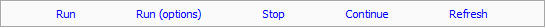
Simulation options
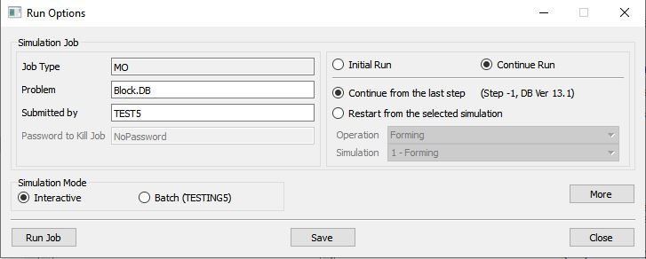
Run simulation window
The progress of the simulation can be monitored as it is running by looking at the Simulation Message and process monitor in Simulation mode. Click the Simulation Message tab to view the Message file. As long as the  option is checked, which is the default setting, the Message file will refresh every couple of seconds.
option is checked, which is the default setting, the Message file will refresh every couple of seconds.
The Message file provides information about which simulation step the simulation is currently on and also gives information dealing with how well the simulation is running.
When the simulation has finished, the following message will be added to the end of the Message file:NORMAL STOP: The assigned steps have been completed as shown in (see Fig. 3DL1.28.).
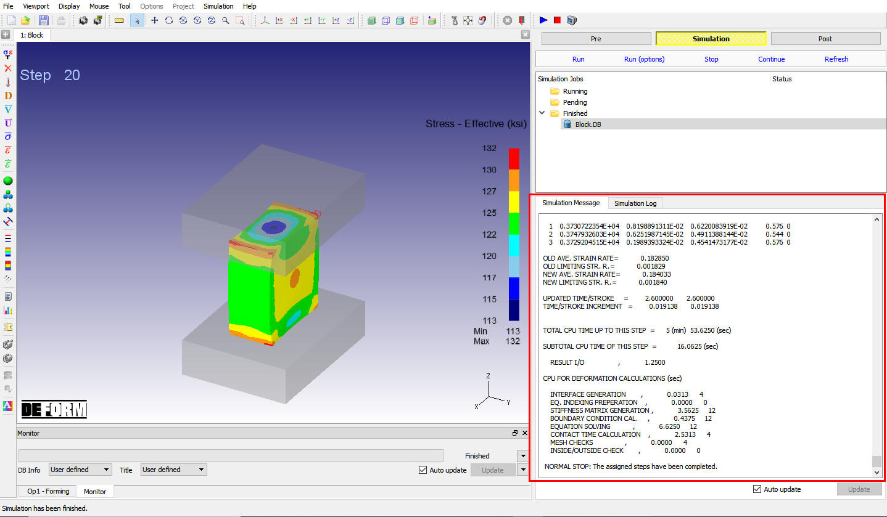
Simulation message tab
After the simulation has completed, click on  tab, MO post processor will open. (See Fig. 3DL1.29.)
tab, MO post processor will open. (See Fig. 3DL1.29.)
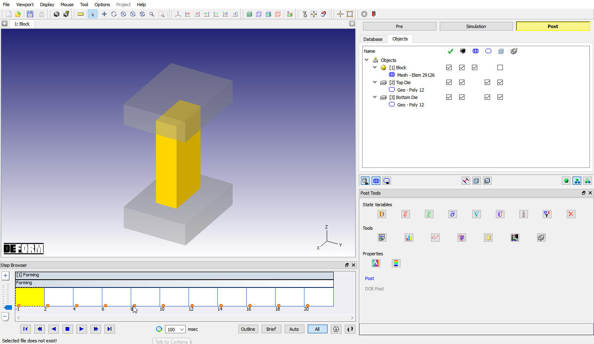
MO Post Processor window
To select the step to be viewed, there is a step browser page. click on the  button in the step browser, when we click on the all button, all the saved steps will be displayed in the
step browser. The
button in the step browser, when we click on the all button, all the saved steps will be displayed in the
step browser. The  icon can be used to bring up the STEP LIST window, which allows the user to define more detailed step settings.
icon can be used to bring up the STEP LIST window, which allows the user to define more detailed step settings.
Some of the most commonly used state variables can be viewed in the post tools page. (See Fig. 3DL1.30.)
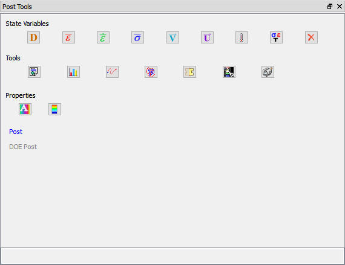
Post Tools page
Select Strain-Effective from post tolls to look at the amount of deformation the workpiece has undergone. Click the  icon to bring up the STATE VARIABLE
window, and select as the Scaling option. This option will use the Local Min and Max effective strain as the extremes on the color bar. Play through the steps of the
simulation to observe the accumulation of strain.
icon to bring up the STATE VARIABLE
window, and select as the Scaling option. This option will use the Local Min and Max effective strain as the extremes on the color bar. Play through the steps of the
simulation to observe the accumulation of strain.
The  icon can be used to access all of the state variable options.
icon can be used to access all of the state variable options.
In DEFORM it is possible to track points in an object through the simulation. Not only can the position of the points be tracked but also the state variables at those locations. To open the Point Tracking window, click the  icon.
icon.
We want to define several points on the undeformed geometry and see where they go as the part deforms. To view the undeformed geometry, click the button to view the first step of the simulation. Now click three locations on the workpiece (See Fig. 3DL1.31.) and accept the default Tracking option and click on .
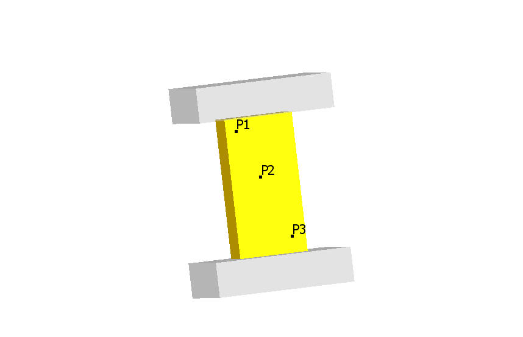
Point tracking points
When a state variable is selected from the State Variable pull-down menu, the point tracking graph for the three points will appear in the DISPLAY window.
Click the  icon to play the through the steps. You will notice that the corresponding step on the Point Tracking plot also gets highlighted as the steps change. Click the
icon to play the through the steps. You will notice that the corresponding step on the Point Tracking plot also gets highlighted as the steps change. Click the
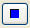
icon to stop the step playback. Now click anywhere on the Point Tracking graph - the selected step shown in the DISPLAY window should change to match the location selected in the graph. (See Fig. 3DL1.32.)
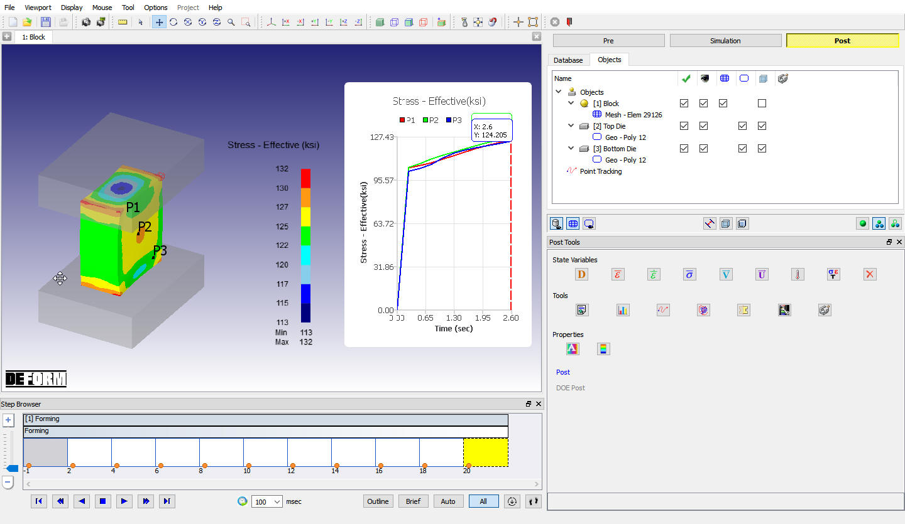
Point Tracking graph
In DEFORM it is possible to slice an object and then view different state variables within the object. Let's first hide the Point Tracking graph by right-clicking the Point Tracking in the Object Tree and selecting the Hide Point Tracking graph option. (See Fig. 3DL1.33.)
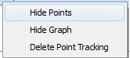
Point tracking RMB option in Object Tree
Click the icon to open the Slicing window. The objects can be sliced in several different ways. The objects in the DISPLAY window have a yellow rectangular box surrounding them. By clicking on a vertical edge of the box, a horizontal slicing plane will be created. By clicking on a horizontal edge of the box, a vertical slicing plane will be created. Click the yellow box in several locations to experiment with this slicing option. (See Fig. 3DL1.34.)
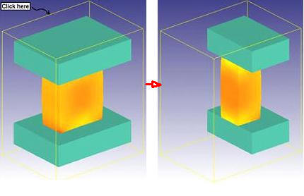
Slicing objects
The slicing planes are defined by a point on a plane and a normal direction to that plane. These are designated in the SLICING window by P (Point) and N (Normal).
The objects can also be sliced by selecting the X, Y, or Z coordinate of the Point and then using the slider bar to drag that coordinate up or down. As the slider moves, the objects will be dynamically sliced. Click the X coordinate of the Point as shown in Fig. 3DL1.35., and then drag the slider back and forth to slice the objects.
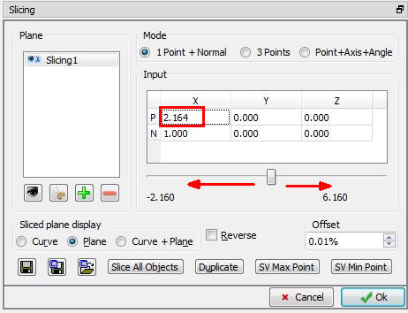
Slicing window
Several options are available for determining how the sliced surfaces are displayed. (See Fig. 3DL1.36.) After the completion of slicing click ok for the slicing page.
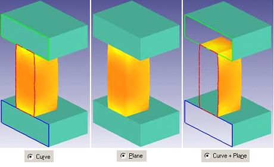
Slicing surfaces
When you are finished, exit the MO Post-processor by clicking the close  icon.
icon.